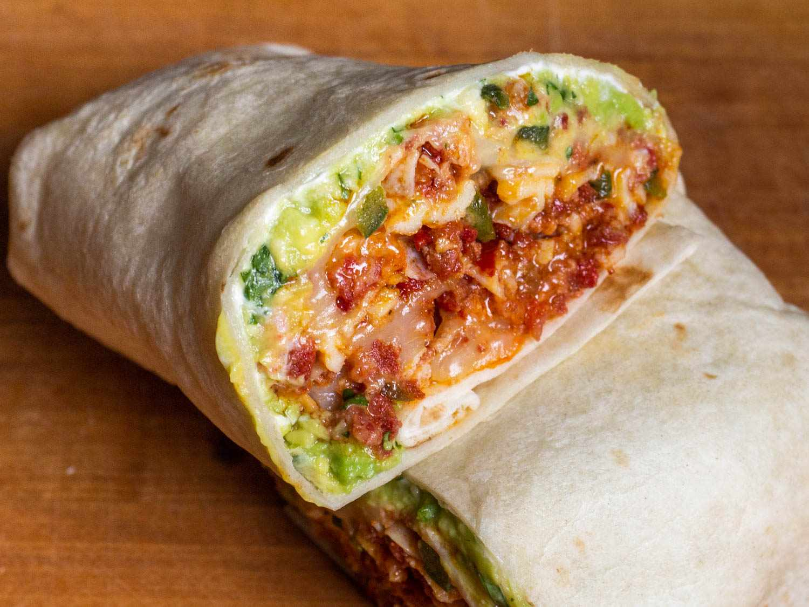

Chorizo Breakfast Burrito

A yummy breakfast burrito using chorizo sausage, great for when you're craving greasy breakfast food (i.e. - when you're hung-over)!
Ingredients List
- cooking spray
- ¾ pound chorizo sausage, casings removed and crumbled
- ½ cup chopped red onion
- 1 green chile pepper, seeded and diced
- 4 eggs
- 4 flour tortillas
- 1 cup shredded Cheddar cheese
Directions
- Generously coat a large frying pan with cooking spray. Cook and stir chorizo over medium high heat until well browned and crumbled. Add onion and chile pepper, and continue cooking until onion is tender.
- Beat eggs in a bowl, and add to chorizo mixture. Reduce heat to medium-low, and continue cooking and stirring until eggs are scrambled and no longer runny.
- Warm flour tortillas in the microwave for 30 seconds. Spoon mixture into the middle of each tortilla and top with shredded Cheddar cheese. Roll up like a burrito, and enjoy!